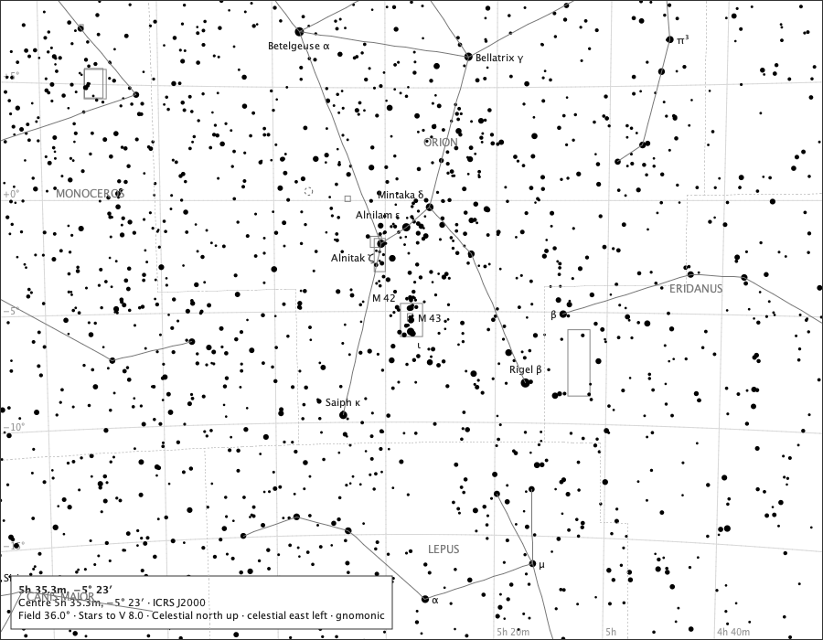

Core chart
Orion at a glance

- Region
- Orion and neighbours
- Field
- 36°
- Ink
- Core chart ink only.
- Source
- docs/studies/constellation-rendering/m42-36deg.png
- Produced
- Production render; regenerated and compared against its generator by make evidence-contracts. v1.7.0 tree (8820a6d).